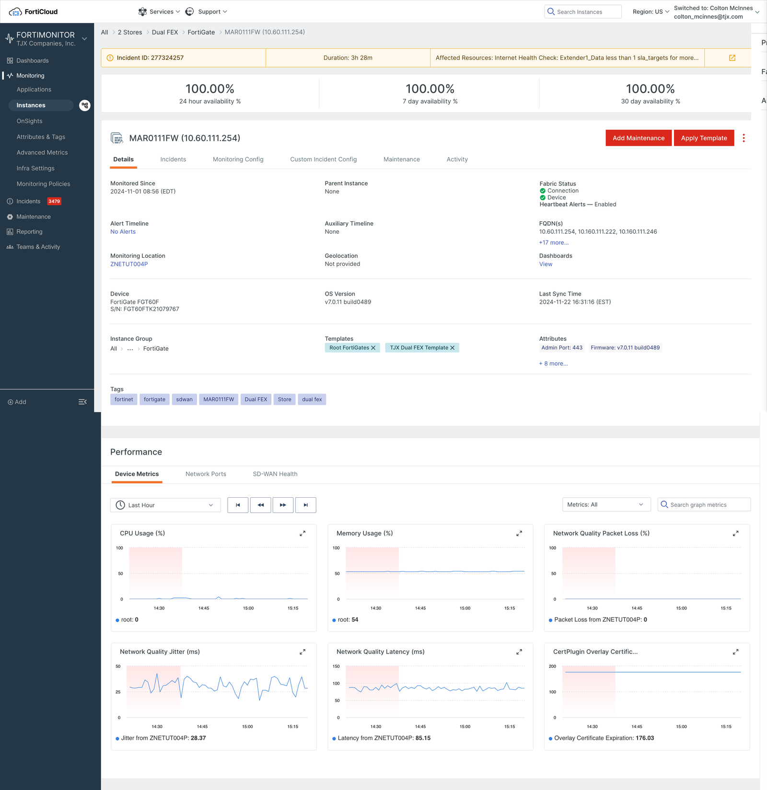
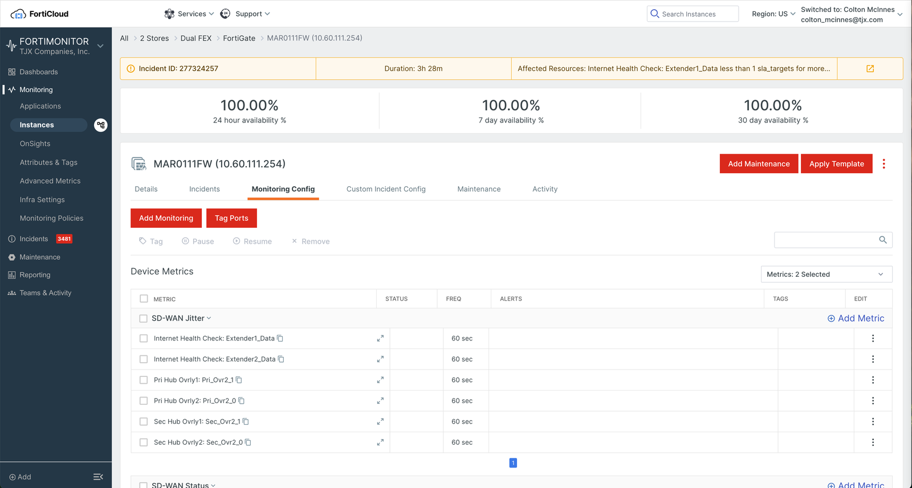
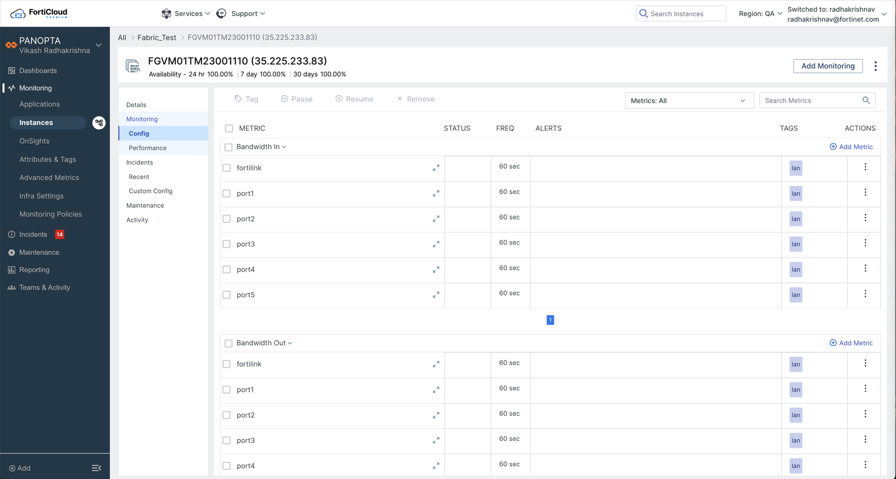
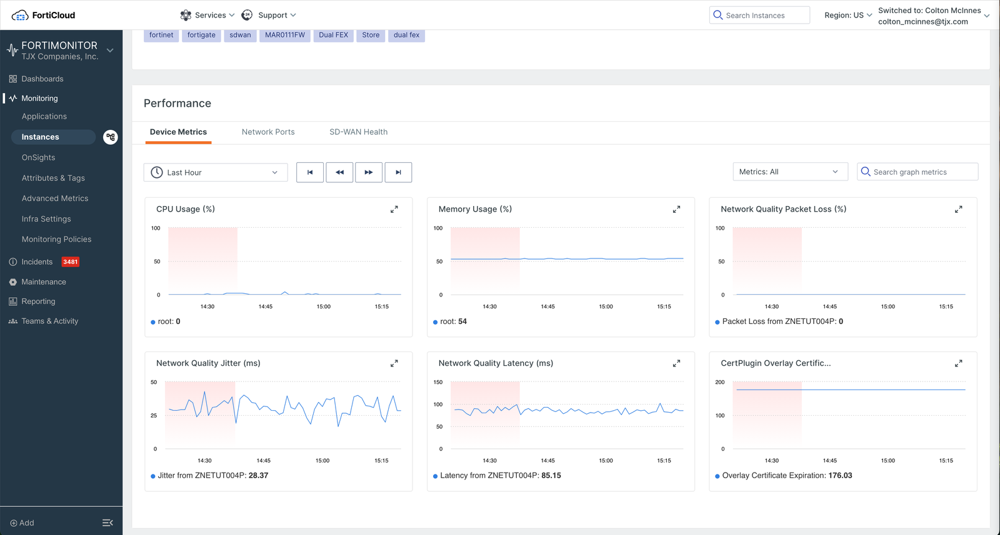
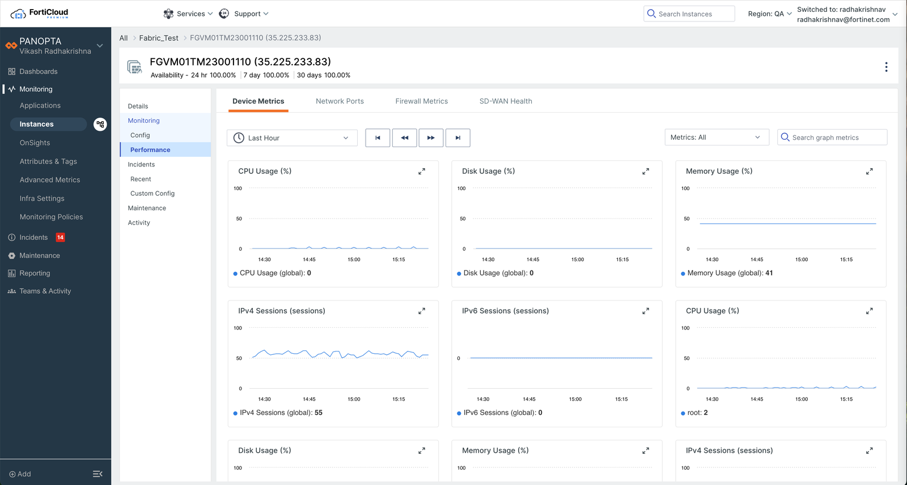
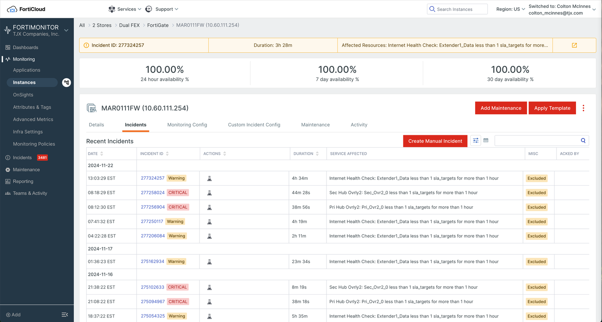
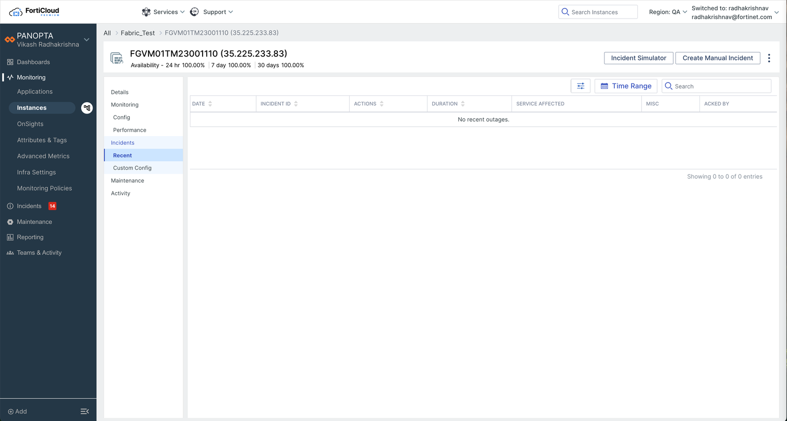
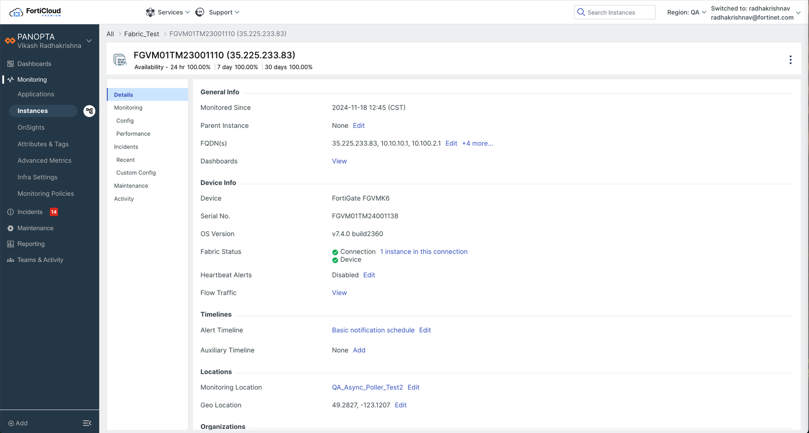

The instance page was FortiMonitor's most-visited screen and its least scalable one. I restructured it around a persistent secondary navigation, then shipped it as a switchable migration so nobody lost a workflow mid-incident.
In FortiMonitor, an instance is a single monitored thing — a firewall, a server, an SD-WAN appliance sitting in a retail store. The instance page is that thing's operational record: how available it's been, what's being monitored on it and how often, every incident it has thrown, its maintenance windows, its audit trail.
Which meant that whenever something went wrong, this is where people landed. It was among the most-trafficked pages in the product, and the page a network operations engineer would keep open on a second monitor for an entire shift.
It was also the page that had absorbed four years of feature growth without anyone re-drawing its structure. That's the tension I was asked to resolve: a page too important to leave alone, and too heavily used to change carelessly.
The page organised itself with a single horizontal tab row. Six tabs — Details, Incidents, Monitoring Config, Custom Incident Config, Maintenance, Activity — laid flat, with no capacity for a seventh and no way to express that some of them belonged together.
The clearest evidence wasn't in a research finding. It was sitting in the layout itself:

A second tab row had appeared below the foldPerformance couldn't fit in the primary tabs, so it was appended as a section further down the page — with its own tabs for Device Metrics, Network Ports and SD-WAN Health. Two navigation systems, one page, no relationship between them.
The most valuable screen space held the least informationA full horizontal band was spent on three availability percentages. Below it, an incident banner. Below that, the header. Real content started well past the fold.
Details had become an undifferentiated gridFifteen-plus attribute pairs in three columns, sorted by nothing in particular, with "+17 more…" and "+8 more…" quietly hiding the rest. Nothing on screen told you what kind of thing you were looking at.
You couldn't tell where you wereThe active tab was the only location cue, and it disappeared the moment you scrolled. On a page this long, people lost their place constantly.
A second row of tabs isn't a design decision. It's what happens when the first row runs out.
Roadmap made this urgent rather than merely untidy. Fabric-wide capabilities — firewall metrics, SD-WAN health, deeper flow data — were queued up, and every one of them needed somewhere to live on this page. The next feature wouldn't have degraded the layout. It would have had nowhere to go at all.
I ran interviews with operators who used the page daily. Nobody said "the information architecture is wrong." What they described was quieter and more telling:
The page had accumulated. Every release had added something, and each addition was individually reasonable, so nothing had ever been the obvious thing to cut. The result was a screen that had grown denser without anyone deciding it should.
And they were re-finding rather than knowing. Fields people needed weekly still took a hunt — scroll, scan, expand a truncated list, scroll back. That's a findability failure, but the deeper problem is trust: on a page you consult during an outage, hesitation is expensive.
Those two things pointed at the same fix. Clutter isn't solved by deleting things people rely on — it's solved by giving every piece of the page a named home, so the page can be read in parts instead of all at once.
The core move was replacing the horizontal tab row with a secondary navigation that sits down the left side of the page and stays there. It's a small-looking change that resolves several problems at once.
The nav stays fixed while content scrolls, with the active item held in a persistent selected state. "Where am I" stopped being a question people had to re-answer after every scroll — and going back to a sibling section became a single click instead of a scroll-and-hunt.
Performance stopped being a section appended to Details and became a destination in its own right, nested under Monitoring alongside Config. That let it keep its own tabs legitimately — and the room paid off immediately: Firewall Metrics landed as a fourth tab rather than as another stack on the page.
The flat attribute grid became labelled groups — General Info, Device Info, Timelines, Locations, Organizations. Same data, but now a person scanning for the OS version knows to look under Device Info instead of reading the whole page. Labels do the finding.
Global buttons became contextual: Add Monitoring appears on Config, Incident Simulator and Create Manual Incident on Incidents. The three-percentage availability band collapsed into a single line under the instance name — the same numbers, a fraction of the height, and content starting above the fold.
Each pair below shows the same task on the old page and the new one.







The redesign was the easier half. The harder question was how to land it on people who used this page every day, often under pressure.
A forced cutover would have been defensible on paper — the new structure is better by every measure we cared about. But "better" and "faster for you, today" are not the same claim. Someone who has spent two years learning where things are on this page is temporarily slower on any new one, and this is a page people open when something is already broken. Taxing them at exactly that moment is a real cost, not an adjustment period to be waved through.
So I proposed we run both. Users could switch back to the old page whenever the new one slowed them down, and we'd retire the old one gradually, based on what people actually did.
The part I'd argue for hardest: the switch-back wasn't a safety net bolted on to reduce complaints. It was the measurement instrument. A support ticket tells you someone was angry enough to write in; a switch-back tells you the exact page, at the exact moment, where the new design cost someone time. That's a far better signal, and it arrives from the people least likely to file feedback.
The new page available to anyone who wanted it, with the old one still the default. Early adopters absorbed the rough edges while the stakes were low.
The default flipped once the obvious gaps were closed. Anyone could go back in one click, and going back was treated as information rather than as failure.
Removal earned rather than scheduled: once switch-backs had flattened and the remaining reasons were understood and addressed, the old page came out.
Going back wasn't a failure to manage. It was the clearest feedback we got.
The clearest result is visible in the product itself. Compare the two Performance screens above: the redesigned page carries a Firewall Metrics tab that has no equivalent in the old layout. That capability arrived after the restructure and simply landed in place — no new appended section, no third navigation system, no negotiation about where it could possibly go. Under the old tab row it would have had nowhere to sit but further down the scroll.
That's the outcome the redesign was actually for. A structure earns its keep when the next thing fits without an argument, and this one did. The same pattern — a persistent secondary nav with two levels and contextual actions in the header — was carried to the Applications and OnSights detail pages, and to appliance types like Collectors, which is the honest test of whether a structure generalises or just fits the page it was drawn for.
The migration was designed to be measured rather than declared. Switch-back rate over time, and which section a person was on when they reverted, were the signals that governed both when the default flipped and when the old page could be removed. Retirement was conditional on those numbers settling — not on a date in a release plan.
Horizontal tabs are a fixed-capacity container pretending to be a flexible one. The moment a product's roadmap outruns the width of the screen, the layout starts making product decisions on your behalf — usually by shoving the newest thing below the fold.
Every item on that page got there for a reason someone could still defend. Reading the page as an accumulation of individually-sound choices told me the fix was structural — give things named homes — rather than a matter of deleting what looked excessive.
Most redesign plans specify the new experience in detail and the transition in a sentence. On a daily-use operational page, the transition is where the risk actually lives, and it deserves the same design attention as the screens.
Keeping the legacy page cost engineering time and slowed the cutover. It bought something worth more: users who trusted the change because they were never trapped by it — and a stream of honest signal about what still didn't work.